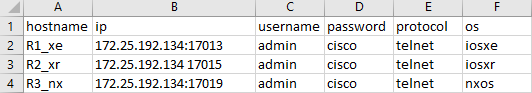

pyatscreatetestbed provide an easy way to create a testbed yaml file. It gives the ability to convert some sources containing device data into a testbed yaml that can be loaded directly.
Use the following columns header to create a testbed yaml file from Excel/csv file:
hostname : the host name of the device
ip : the ip address of the device, to specify a port, add the port number in the format of:ip:port
username : the username for logging into the device
password : the default password for logging into the device, user can leave this field blank for security reason, and Genie will prompt you to enter the password when you connect to the device
protocol : the protocol used to connected to the device i.e. ssh, telnet, etc..
os : the operating system for the device i.e. iosxr, iosxe, nxos, linux, etc..
enable_password : (Optional) to provide a different password for entering privileged EXEC mode with `enable` command
All other columns not listed above will be added to the yaml as a key:value pair
Example
Here is an example excel file containing device data:

we can turn it into a testbed yaml file by running the following command:
Add the --encode-password option to hide the password in the yaml as a secret string.
However this is only for the purpose of obfuscation, the password is not cryptographically secure. Please refer to Secret String for more detail.
Generate from multiple csv/excel files under a directory
Having multiple csv/excel files? You can pass a directory as the input and another directory as the output, then it will create a testbed file for every excel in the provided directory.
(venv)demo$pyatscreatetestbedfile--pathexcels--outputyamls-r
Testbedfilegenerated:
excels/my_devices.xlsx->yamls/my_devices.yaml
excels/my_devices_2.xlsx->yamls/my_devices_2.yaml
excels/my_devices_test.csv->yamls/my_devices_test.yaml
excels/sub1/my_devices_csv.csv->yamls/sub1/my_devices_csv.yaml
excels/sub1/subsub1/my_devices_csv.csv->yamls/sub1/subsub1my_devices_csv.yaml
Errors:
excels/my_devices_csv.csvhasanerror:Duplicatehostname"R2_xr"detected
excels/my_devices_test_err.csvhasanerror:'Every device must have a hostname'
excels/my_devices_test_err.xlsxhasanerror:Error-3whiledecompressingdata:invalidcode--missingend-of-block
Warnings:
excels/not_excel.txtisnotexcelorcsv
excels/my_devices_csv.yamlisnotexcelorcsv
excels/sub1/not_sub_excel.txtisnotexcelorcsv
Note
The added -r option above will enable genie to look for excels in subdirectories.
Don’t have an excel sheet or a csv? Don’t worry we got you covered! You can manually input the device data without providing the csv/excel file.
Just follow the prompt from the program to enter the data:
Having Ansible inventory file already and want to leverage it even with pyATS?
Yes! We offer the option to convert the Ansible inventory file to pyATS testbed yaml.
Add the --encode-password option to hide the password in the yaml as a secret string.
However this is only for the purpose of obfuscation, the password is not cryptographically secure. Please refer to Secret String for more detail.
You are managing network devices on Netbox and want to generate pyATS testbed yaml from the source of truth? Of course, you can! pyatscreatetestbednetbox command can access to Netbox via REST API and retrieves device data and convert to testbed file.
Add the --encode-password option to hide the password in the yaml as a secret string.
However this is only for the purpose of obfuscation, the password is not cryptographically secure. Please refer to Secret String for more detail.
This subcommand uses cookiecutter to generate a new Genie parser.
The generated folder contains a parser template and a parser unittest template
Usage:
genie create parser [options]
Description:
create a Genie parser from cookiecutter template, located at:
https://github.com/CiscoTestAutomation/genie-parser-template
Parser Options:
--parser_name PARSER_NAME
name of parser to be generated
--os OS Cisco OS for the parser
General Options:
-h, --help Show help
-v, --verbose Give more output, additive up to 3 times.
-q, --quiet Give less output, additive up to 3 times, corresponding to WARNING, ERROR, and CRITICAL logging levels
By default, the command will prompt you for information it needs to generate
the parser from template. These prompts can be automated if you provide the
corresponding command line arguments.
# Example
# -------
#
# creating a parser by entering everything through the prompts
bash$ genie create parser
Checking if cookiecutter is installed...
Parser Name: my_parser
Cisco OS for the parser [IOSXE/IOSXR/NXOS]: IOSXE
Generating your project...
# this will create a new folder with your provided parser name, containing
# the template files
bash $ tree my_parser/
my_parser/
├── my_parser.py
└── test_my_parser.py
Just like geniecreateparser, this subcommand uses cookiecutter to generate a new Genie trigger.
The generated folder contains a trigger template and a trigger datafile template
Usage:
genie create trigger [options]
Description:
create a Genie trigger from cookiecutter template, located at:
https://github.com/CiscoTestAutomation/genie-trigger-template
Trigger Options:
--trigger_name TRIGGER_NAME
name of trigger to be generated
--action ACTION action the trigger will perform
--undo_action UNDO_ACTION
undo action the trigger will perform
General Options:
-h, --help Show help
-v, --verbose Give more output, additive up to 3 times.
-q, --quiet Give less output, additive up to 3 times, corresponding to WARNING, ERROR, and CRITICAL logging levels
By default, the command will prompt you for information it needs to generate
the trigger from template. These prompts can be automated if you provide the
corresponding command line arguments.
# Example
# -------
#
# creating a trigger by entering everything through the prompts
bash$ pyats create trigger
Checking if cookiecutter is installed...
Trigger Name: my_trigger
Action the trigger will perform (ex. Add): Shut
Undo action the trigger will perform (ex. Remove): NoShut
Generating your project...
# this will create a new folder with your provided trigger name, containing
# the template files
bash $ tree my_trigger/
my_trigger/
├── my_trigger.py
└── my_trigger_datafile.yaml